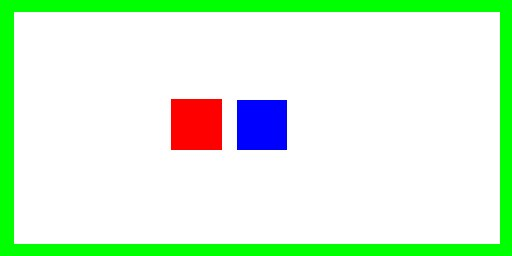

C=77.695 pF/m
L=143.25 nH/m
C= 62.162 pF/m
L= 178.99 nH/m
C= 57.425 pF/m
L= 193.757148 nH/m
Zeven=138.9950 Ohms
Zodd= 31.6915 Ohms
atlc - Arbitrary Transmission Line Calculator.atlc calculates the impedance of two or three wire electrical transmission lines of totally arbitrary cross section, using a numerical technique called finite difference. The conductors can be coaxial, run side by side, or in just about any configuration you can think of. The diagrammes below shows 3 types of 2-wire transmission lines and a directional copuler, all of which may be analysed. In each diagramme, one conductor is shown red, the other conductor shown green and in the case of a coupler, the third conductor is shown blue. The dielectrics are shown in a few other colours, with white being a vacuum and turquoise being a dielectric with an effective permittivity of 4.8 (about the same as fibreglass PCB).
| |
|
|
 |
| Zo=42.938 Ohms C=77.695 pF/m L=143.25 nH/m |
Zo= 53.660 Ohms C= 62.162 pF/m L= 178.99 nH/m |
Zo= 58.087 Ohms C= 57.425 pF/m L= 193.757148 nH/m |
Zo= 66.3699 Ohms Zeven=138.9950 Ohms Zodd= 31.6915 Ohms |
atlc needs to know the cross section of the transmission line. This cross section is stored in a data file, which happens to be a Windows bitmap file. This bitmap file is then read by atlc There are two ways to generate the bitmap for atlc.
ushape.bmp
atlc. The programme should compile very easily and quickly. Being rather CPU intensive, atlc has been written to support multiple processors if available. Here is an example of using atlc, with the file ushape.bmp being drawn by a graphics programme. % atlc -v ushape.bmp ushape.bmp C= 81.9168 pF/m L= 135.826831 nH/m Zo= 40.719859 Ohms v= 299792458.010503 m/s v_f= 1.000000 VERSION=2.02 ushape.bmp C= 75.2508 pF/m L= 147.858988 nH/m Zo= 44.327010 Ohms v= 299792458.010503 m/s v_f= 1.000000 VERSION=2.02 ushape.bmp C= 73.8758 pF/m L= 150.610988 nH/m Zo= 45.152038 Ohms v= 299792458.010503 m/s v_f= 1.000000 VERSION=2.02 ushape.bmp C= 73.5329 pF/m L= 151.313183 nH/m Zo= 45.362551 Ohms v= 299792458.010503 m/s v_f= 1.000000 VERSION=2.02 ushape.bmp C= 73.4469 pF/m L= 151.490478 nH/m Zo= 45.415703 Ohms v= 299792458.010503 m/s v_f= 1.000000 VERSION=2.02 ushape.bmp C= 73.4254 pF/m L= 151.534724 nH/m Zo= 45.428967 Ohms v= 299792458.010503 m/s v_f= 1.000000 VERSION=2.02 ushape.bmp C= 73.4201 pF/m L= 151.545603 nH/m Zo= 45.432229 Ohms v= 299792458.010503 m/s v_f= 1.000000 VERSION=2.02It will be seen that
atlc makes several estimates of the transmission lines properties, each subsequent one being closer to the true value. (normally only the final result is shown, but the -v option added above causes atlc to print intermediate results).
ex2.bmp, which is then read by atlc
% rect_in_rect 250 175 10 32 4 200 56 25 1.0 2.5 3 > 2.bmp % atlc 2.bmp 2.bmp Er=MIXED C= 47.0033 pF/m L= 256.338161 nH/m Zo= 73.848653 Ohms v= 288090749.890245 m/s v_f= 0.960967 VERSION=2.02
atlc was written by, and is supported by, Dr. David Kirkby (G8WRB). It is issued under the GNU public license.